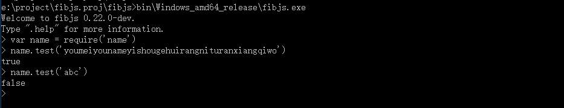

ajouter un module natif
Si vous avez besoin de fonctionnalités autres que celles fournies par le module natif fibjs, ou si vous souhaitez contribuer au code de fibjs, cet article peut vous aider.
écrire le fichier idl
idl est un langage descriptif utilisé dans fibjs pour définir des modules natifs et des méthodes objet.
Avant de commencer à écrire vos propres modules fibjs, vous devez écrire le langage descriptif idl. Prenons le nom du module personnalisé comme exemple. Je dois écrire le nom de langage descriptif.idl et placer ce fichier dans le répertoire ${{fibjs_project_dir}}/idl/zh-cn/ , où ${{fibjs_project_dir}} représente le répertoire où se trouve le projet fibjs.
Notre module de nom est très simple, il n'y a qu'une seule méthode de test, son paramètre est une chaîne, cette chaîne est les paroles, la méthode de test juge si les paroles sont correctes et la valeur de retour est de type booléen. name.idl s'écrit comme suit
1
2
3
4
5
6
7
8
9
10
11
12
13
14/*! @brief name module
how to use
@code
var name = require('name');
@endcode
*/
module name
{
/*! @brief 测试输入的字符串是不是正确的歌词
@param lyrics 歌词
*/
static Boolean test(String lyrics);
};
générer le fichier d'en-tête
Exécutez la fibjs idlc.jscommande , qui lira et analysera tous les fichiers idl du répertoire idl, et générera les fichiers d'en-tête et les documents correspondants. Les fichiers d'en-tête générés seront stockés dans le répertoire "fibjs/include/ifs/". Par exemple, name.idl générera automatiquement le fichier d'en-tête ${{fibjs_project_dir}}/fibjs/include/ifs/name.h, qui définit la classe name_base.
1
2
3
4
5
6
7
8
9
10
11
12
13
14
15
16
17
18
19
20
21
22
23
24
25
26
27
28
29
30
31
32
33
34
35
36
37
38
39
40
41
42
43
44
45
46
47
48
49
50
51
52
53
54
55
56
57
58
59
60
61
62
63
64
65
66
67
68
69
70
71
72
73
74
75
76
77/***************************************************************************
* *
* This file was automatically generated using idlc.js *
* PLEASE DO NOT EDIT!!!! *
* *
***************************************************************************/
#ifndef _name_base_H_
#define _name_base_H_
/**
@author Leo Hoo <lion@9465.net>
*/
#include "../object.h"
namespace fibjs {
class name_base : public object_base {
DECLARE_CLASS(name_base);
public:
// name_base
static result_t test(exlib::string lyrics, bool& retVal);
public:
static void s__new(const v8::FunctionCallbackInfo<v8::Value>& args)
{
CONSTRUCT_INIT();
Isolate* isolate = Isolate::current();
isolate->m_isolate->ThrowException(
isolate->NewString("not a constructor"));
}
public:
static void s_test(const v8::FunctionCallbackInfo<v8::Value>& args);
};
}
namespace fibjs {
inline ClassInfo& name_base::class_info()
{
static ClassData::ClassMethod s_method[] = {
{ "test", s_test, true }
};
static ClassData s_cd = {
"name", true, s__new, NULL,
ARRAYSIZE(s_method), s_method, 0, NULL, 0, NULL, 0, NULL, NULL, NULL,
&object_base::class_info()
};
static ClassInfo s_ci(s_cd);
return s_ci;
}
inline void name_base::s_test(const v8::FunctionCallbackInfo<v8::Value>& args)
{
bool vr;
METHOD_NAME("name.test");
METHOD_ENTER();
METHOD_OVER(1, 1);
ARG(exlib::string, 0);
hr = test(v0, vr);
METHOD_RETURN();
}
}
#endif
écrire le code source
La méthode s_test est un accesseur v8 qui encapsule la méthode test. Ici, nous avons seulement besoin d'implémenter la méthode de test. La méthode de test a deux paramètres, v0 est les paroles d'entrée et vr est la valeur de retour. Nous plaçons les fichiers cpp dans le répertoire ${{fibjs_project_dir}}/fibjs/src/ et les fichiers d'en-tête dans le répertoire ${{fibjs_project_dir}}/fibjs/include. Aucun fichier d'en-tête supplémentaire n'est requis pour cet exemple. Nous créons un nouveau fichier name.cpp dans le répertoire fibjs/src/ avec le contenu suivant :
1
2
3
4
5
6
7
8
9
10
11
12
13
14
15#include "object.h"
#include "ifs/name.h"
namespace fibjs
{
DECLARE_MODULE(name);
result_t name_base::test(exlib::string lyrics, bool& retVal)
{
if (lyrics == "youmeiyounameyishougehuirangnituranxiangqiwo")
retVal = true;
else retVal = false;
return 0;
}
}
Il faut noter que DECLARE_MODULE(name);cette phrase, cette phrase déclare le module "name" et l'enregistre sur l'objet javascript. Cette phrase doit être ajoutée lors de l'écriture du code source. v0.25.0Dans les versions ultérieures, nous avons supprimé le module fibjs pour une meilleure réutilisation, vous devez donc toujours ajouter la phrase suivante à fibjs/program/src/fibjs.cppla importModulefonction : IMPORT_MODULE(name);pour installer des modules personnalisés.
compiler et tester
Avant de compiler sur Windows, vous devez l'exécuter une fois fibjs tools/vsmake.js, puis compiler. Les résultats de compilation et d'exécution sont les suivants :

Résumer
Apprentissage de l'ajout et de la modification de modules et d'objets natifs fibjs. Nous pouvons écrire toutes sortes de modules complexes, et nous pouvons également porter des bibliothèques tierces sur fibjs comme support pour écrire nos modules. Vous êtes invités à contribuer davantage à fibjs.